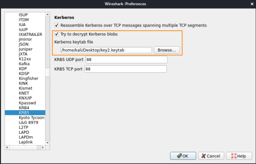

decrypt packets
If we hold an accounts long-term Kerberos
secret key used to encrypt the packets during the transmission, we can provide it to Wireshark in the settings:
Edit → Preferences → Protocols → KRB5
Here we have to add the .keytab file that contain the password to decrypt the packets
Now when we restart Wireshark we should see the encrypted data in cleartext
How to generate keytab fileFirst we have to install the
heimdal-dbg package
root@kali:/# apt-get install heimdal-clients
Now we can use
ktutil tool.
The only important data that we will insert
is the password(of the
krbtgt or of the
Service account). because is this one that Wireshark will use to decrypt the data
root@kali:/# ktutil
ktutil: addent -password -p [principal] -k 0 -e rc4-hmac
ktutil: write_kt key2.keytab #save file in the current folder